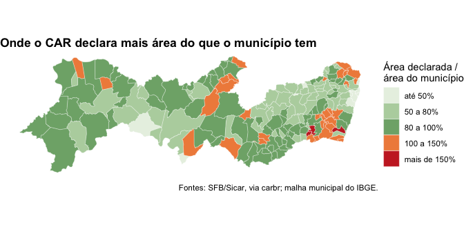
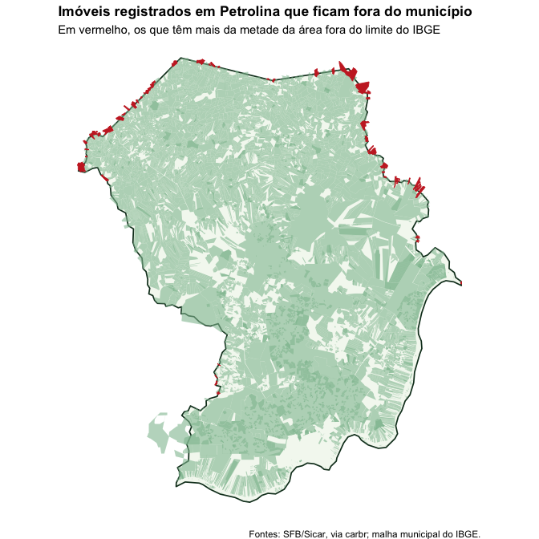

O CAR é autodeclarado: quem desenha o perímetro e
informa os dados é o próprio declarante, e a conferência vem depois, na
análise. Enquanto ela não chega, o cadastro guarda sobreposições,
imóveis fora do município informado e áreas que não fecham com o
território. Este guia mostra como encontrar essas inconsistências com o
carbr, do país até um município.
Nada aqui é juízo sobre um imóvel em particular: são sinais para orientar a análise e para quem usa os dados saber o que tem em mãos.
library(carbr)
library(dplyr)
library(ggplot2)
library(sf)
# Malhas do IBGE, direto da API de malhas, em SIRGAS 2000.
ibge_mesh <- function(path) {
read_sf(paste0(
"https://servicodados.ibge.gov.br/api/v3/malhas/", path,
"formato=application/vnd.geo%2Bjson&qualidade=intermediaria"
)) |>
st_transform(4674)
}O que a carga já registra
Ao republicar os dados, o carbr anota no catálogo o que
encontrou em cada UF: geometrias inválidas (com autointerseção, por
exemplo) e imóveis cujo código começa com a sigla de outra UF.
cat <- car_catalog()
cat |>
arrange(desc(invalid_geometries)) |>
select(state, properties, invalid_geometries, registered_in_other_state)
#> # A tibble: 27 × 4
#> state properties invalid_geometries registered_in_other_state
#> <chr> <int> <int> <int>
#> 1 MG 1185013 597 0
#> 2 SP 474172 498 0
#> 3 GO 245524 210 4
#> 4 PR 559480 185 0
#> 5 MS 90552 156 0
#> 6 SC 437300 134 0
#> # ℹ 21 more rowsSão 2748 geometrias inválidas no país, mantidas na publicação e
marcadas na coluna geometry_valid, e 29 imóveis com código
de outra UF.
O código diz um município, o cadastro diz outro
O código do imóvel traz o município em que ele foi registrado
(UF-0000000-…). Em Pernambuco, comparando com a coluna
municipality_code:
moved <- car_tbl("PE") |>
mutate(code_municipality = substr(property_code, 4L, 10L)) |>
filter(code_municipality != as.character(municipality_code)) |>
select(property_code, municipality, area_ha) |>
collect()
nrow(moved)
#> [1] 1138
moved |> count(municipality, sort = TRUE)
#> # A tibble: 163 × 2
#> municipality n
#> <chr> <int>
#> 1 Araripina 106
#> 2 Trindade 102
#> 3 Pedra 79
#> 4 Itaíba 47
#> 5 Itapetim 25
#> 6 Ouricuri 25
#> # ℹ 157 more rowsNem todo caso é erro — imóveis mudam de município quando a base municipal é atualizada —, mas é uma lista curta para conferir.
Mais área declarada do que território
Somando a área declarada dos imóveis de cada município e dividindo pela área do município na malha do IBGE, o resultado não deveria passar de 1. Passa em vários.
mesh <- ibge_mesh("estados/PE?intrarregiao=municipio&")
mesh$territory_ha <- as.numeric(st_area(mesh)) / 1e4
ratio <- mesh |>
transmute(municipality_code = as.integer(codarea), territory_ha) |>
left_join(car_municipalities("PE"), by = "municipality_code") |>
mutate(ratio = area_ha / territory_ha)
ratio |>
st_drop_geometry() |>
arrange(desc(ratio)) |>
select(municipality, properties, area_ha, territory_ha, ratio)
#> # A tibble: 185 × 5
#> municipality properties area_ha territory_ha ratio
#> <chr> <int> <dbl> <dbl> <dbl>
#> 1 Catende 1289 42584. 20837. 2.04
#> 2 Jaqueira 1203 16282. 8773. 1.86
#> 3 Rio Formoso 776 37162. 22932. 1.62
#> 4 Cortês 756 14887. 10327. 1.44
#> 5 Primavera 620 16195. 11245. 1.44
#> 6 Ribeirão 799 39829. 29218. 1.36
#> # ℹ 179 more rowsEm 35 dos 185 municípios de Pernambuco o cadastro soma mais área do que o município tem; em Catende, o dobro. A concentração na Zona da Mata sugere sobreposição sistemática entre imóveis, não erro isolado.
ratio |>
mutate(class = cut(
ratio, c(0, 0.5, 0.8, 1, 1.5, Inf),
labels = c("até 50%", "50 a 80%", "80 a 100%", "100 a 150%", "mais de 150%")
)) |>
ggplot() +
geom_sf(aes(fill = class), colour = "white", linewidth = 0.1) +
scale_fill_manual(
values = c("#e8f1e4", "#b7d3ad", "#7fae78", "#f08c4a", "#c92a2a"),
na.translate = FALSE, name = "Área declarada /\nárea do município"
) +
coord_sf(xlim = c(-41.4, -34.8), ylim = c(-9.5, -7.25)) +
labs(
title = "Onde o CAR declara mais área do que o município tem",
caption = "Fontes: SFB/Sicar, via carbr; malha municipal do IBGE."
) +
theme_void() +
theme(plot.title = element_text(face = "bold"))
plot of chunk razao
Dentro de um município: Petrolina
Com os perímetros, dá para ir ao detalhe. Os imóveis não cancelados de Petrolina e o limite do município:
petrolina <- car_properties("PE", municipality = "Petrolina") |>
filter(status != "cancelled", geometry_valid)
boundary <- mesh |> filter(codarea == "2611101")Imóveis fora do município
Recortando cada imóvel pelo limite do município, em coordenadas planas para medir em hectares, sai a parcela da área que fica do lado de fora. Faixas estreitas na divisa são esperadas, porque o traçado do IBGE e o do declarante nunca coincidem; o sinal é o imóvel com mais da metade da área fora.
sf_use_s2(FALSE)
utm <- st_transform(petrolina, 31984)
inside <- st_intersection(select(utm, property_code), st_geometry(st_transform(boundary, 31984)))
inside_ha <- setNames(as.numeric(st_area(inside)) / 1e4, inside$property_code)
geometry_ha <- as.numeric(st_area(utm)) / 1e4
outside_share <- 1 - coalesce(inside_ha[utm$property_code], 0) / geometry_ha
petrolina$outside <- outside_share > 0.5
petrolina |>
st_drop_geometry() |>
summarise(properties = n(), outside_ha = sum(area_ha[outside]), outside = sum(outside))
#> # A tibble: 1 × 3
#> properties outside_ha outside
#> <int> <dbl> <int>
#> 1 10849 3359. 90
ggplot() +
geom_sf(data = boundary, fill = "#f4f8f1", colour = "#123a23", linewidth = 0.6) +
geom_sf(data = filter(petrolina, !outside), fill = "#8fbf9f", colour = NA, alpha = 0.6) +
geom_sf(data = filter(petrolina, outside), fill = "#c92a2a", colour = "#c92a2a", linewidth = 0.3) +
labs(
title = "Imóveis registrados em Petrolina que ficam fora do município",
subtitle = "Em vermelho, os que têm mais da metade da área fora do limite do IBGE",
caption = "Fontes: SFB/Sicar, via carbr; malha municipal do IBGE."
) +
theme_void() +
theme(plot.title = element_text(face = "bold"))
plot of chunk fora
Sobreposições
st_overlaps() aponta, para cada imóvel, os outros com
que ele divide área (tocar na divisa não conta):
overlaps <- lengths(st_overlaps(utm))
summed_ha <- sum(geometry_ha)
covered_ha <- as.numeric(st_area(st_union(utm))) / 1e4
tibble::tibble(
properties = nrow(utm),
overlapping = sum(overlaps > 0),
summed_ha = round(summed_ha),
covered_ha = round(covered_ha),
double_counted_ha = round(summed_ha - covered_ha)
)
#> # A tibble: 1 × 5
#> properties overlapping summed_ha covered_ha double_counted_ha
#> <int> <int> <dbl> <dbl> <dbl>
#> 1 10849 8462 408603 367152 4145178% dos imóveis sobrepõem ao menos um vizinho, quase sempre em faixas estreitas na divisa. Somadas, as áreas passam em 41 mil hectares a área de fato coberta. Os casos que mais pesam são poucos:
petrolina |>
st_drop_geometry() |>
mutate(neighbours = overlaps) |>
arrange(desc(neighbours)) |>
select(property_code, area_ha, fiscal_modules, size_class, neighbours)
#> # A tibble: 10,849 × 5
#> property_code area_ha fiscal_modules size_class
#> <chr> <dbl> <dbl> <chr>
#> 1 PE-2611101-588BC484570D440484F527F07DF5AFFA 81579. 0.521 small
#> 2 PE-2611101-5316F05D569C41C4847C52AF2C7E5CCB 6648. 0.623 small
#> 3 PE-2611101-5149DB80F9E54FDDB445BDC40DF501AF 361. 6.56 medium
#> 4 PE-2611101-0B75BD9F97224B73A761792FC4095A9C 306. 5.56 medium
#> 5 PE-2611101-961DA0E4B2FA4FA6BA6601588C06310A 143. 2.54 small
#> 6 PE-2611101-CB1BE273577643AD9BC07FB09008FB34 306. 5.56 medium
#> neighbours
#> <int>
#> 1 325
#> 2 49
#> 3 41
#> 4 40
#> 5 26
#> 6 26
#> # ℹ 10,843 more rows“Pequeno” nem sempre é pequeno
O porte (size_class) vem dos módulos fiscais informados
pelo Sicar, não da área. Em assentamentos e territórios de povos e
comunidades tradicionais, um único cadastro cobre muitas famílias, e um
perímetro de milhares de hectares aparece com menos de quatro módulos.
Em Pernambuco, os imóveis “pequenos” com mais de 440 hectares — quatro
vezes o maior módulo fiscal do país:
car_tbl("PE") |>
filter(size_class == "small", area_ha > 440) |>
group_by(property_type) |>
summarise(properties = n(), area_ha = sum(area_ha, na.rm = TRUE)) |>
collect()
#> # A tibble: 3 × 3
#> property_type properties area_ha
#> <chr> <dbl> <dbl>
#> 1 traditional_community 65 164138.
#> 2 rural_property 1 926.
#> 3 settlement 432 651693.Quem conta “pequenos produtores” pelo porte deve separar o tipo do
imóvel (property_type) antes.
O que fazer com isso
Cada sinal acima vira uma lista de imóveis:
property_code leva ao cadastro, e
car_property() devolve o perímetro. Para repetir a análise
em outro município ou outra UF, basta trocar os argumentos.